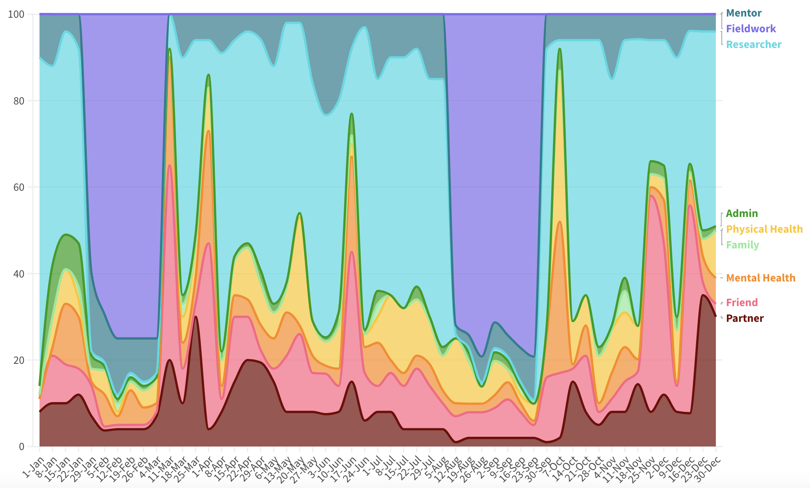

About me
The action of doing science - asking questions, taking measurements, testing hypotheses - is only one component of being a scientist. There are many other roles I play, and motivations behind the work that I do.
Here are some of the things I am especially passionate about:
DEI · Conservation · Education · Work-Life
Diversity & Inclusion
There is a table where scientists gather after a day in the field, lab or classroom - swapping stories over beers, or filling up on coffee before an evening lecture. At the table is the luxury of being curious and creative. At the table is education, mentorship, confidence, and growth.
Historically, this table was mostly male.
Still today, this table is mostly White.
Systemic exclusion is when the faces and voices at a table fail to represent the groups of people desiring a seat. When the projected image of a scientist is singular, it sends a message of who is allowed to be there, and underrepresented groups place ourselves in the stands instead of at the starting line. Moreover, exclusive environments redefine what it means to fail; instead of an invitation to solve problems, failure becomes a voice of self-doubt that says, why am I even trying?
The voice that says I don’t belong at the table.
Diversifying the faces and voices at the table of STEM and academia is thus a critical step towards dismantling the glass ceiling that limits who has access. I am committed to supporting women, BIPOC and LGBTQIA+ communities, celebrating multiculturalism & neurodiversity, respecting the complexity of diverse lived experiences, and resisting divisive forces that perpetuate social injustice in the scientific and academic communities.

Conservation
Nature isn’t always cute. Sometimes it’s slimy, poop-colored and has a large set of teeth, grinning at you from dark crevices in the bottom of the river.
I originally pursued biology to “save all the animals” from things like pollution and deforestation, but as a teenager I was mainly concerned with what I thought were “cute” animals - polar bears, sea turtles, maybe dolphins. I saw that conservation was important, but had grown up uncomfortable in the outdoors and actually afraid of most wildlife. Instead, my first field experience ended up being with the eastern hellbender (Cryptobranchus alleganiensis), or ‘snot-otters’ as they are known colloquially across their range in rural Appalachia. Of course, as I got to know these creatures I quickly recognized them as the most beautiful, interesting, and unique herps in North America (shameless bias here), sadly also in decline. I also came to realize that I was not alone in my original discomfort with them. Much of the local community, fortunate enough to grow up with this amazing species in their backyards, were afraid of them too. Hellbenders were my introduction to the real challenge of conservation: motivating people to connect with, and care about, topics that are unfamiliar or uncomfortable.
I believe that with some effort it is always possible to find a connection that is meaningful to someone, to help bridge the gap between humans and their environment. In my work, it is often achieved by simply introducing someone to the species in their backyard. A single interaction can spark the realization that everything is connected - air, water, soil, microbes, the cells in our bodies, and all life on earth. As a scientist, discovering and describing those connections means little without the support of our communities helping to conserve them.

Education
To study ecology or biology involves immersing ourselves in a foreign experience - the experience of an organism or system in nature. We practice understanding how it operates within the context of, for example, its motivations, evolutionary constraints or stochasticity.
It is no suprise, then, that learning requires empathy. How well students know and understand something is a direct consequence of previous experiences (or lack thereof) and reflects the lens they are looking through.
I believe the role of an educator is to provide students with new experiences and lenses that will expand their fields of view. When we ask students to just memorize information, it gets filed into whatever existing folders they already have and no growth is made. To expand fields of view, my goal is to teach students how to consistently reorganize knowledge and make space for new folders. In other words, to probe at habitual trains of thought & encourage disembarkment without forceful derailment.
My priorities as an educator are to 1) help students become empathetic learners and comfortable asking questions in unfamiliar spaces; 2) be inclusive of diverse learning styles, starting lines, and limitations, and allow students to direct their own learning process when possible; 3) be transparent about how my own experience influences my perspective and be open to amendments in how/what I teach; 4) encourage colleagues to actively improve the education system, challenge practices that perpetuate inequity, and work together to change them.
Work-life balance
There is not a one-size-fits-all model for balancing demands of work and personal life. Simple strategies like “don’t work past 5pm” or “don’t work on weekends” are often incompatible with field seasons, grant deadlines, and time-sensitive laboratory experiments. As academics, our daily, monthly, and annual workloads can be extremely individualized - even colleagues at the same institution or studying similar systems can have vastly different schedules and mosaics of responsibility - making it difficult to assess our own personal levels of achievement.
In addition, baked into much of the dialog about “Work-life balance” in academia are antiquated assumptions that are unrealistic for (and not representative of) the diversity in our field currently. For example, the tradition of ‘over-working’ (>40hrs/wk) in academia is the byproduct of a historically all-male workforce with less at-home responsibilities. Work-life balance conversations became more frequent as women rose in the workforce, reflecting the struggle of pursuing a career while maintaining household/child-care responsibilities, yet usually still was achieved only at the expense of achieving ‘less’ at work than their male counterparts.
Though we are moving towards more diverse representation in higher education and away from binary gender norms, the internalized expectations we place on ourselves and external metrics of evaluating the success/productivity of others are still lagging behind, contributing to imposter syndrome and burnout - especially for historically underrepresented groups.
To encourage more transparency about the diversity of work and life experiences, colleagues and I have developed this shiny app tool, awhere you can turn your life into an abstract blob of color - for fun and reflection.

Here is me in 2023 - the first year of my post-doc. A beautiful mess, that somehow works for me :) Read more about re-conceptualizing work and life as a dynamic equilibrium in our recent article in Trends in Ecology & Evolution. We advocate for granting ourselves (and others) the permission to respond to life’s complexity with the same context-dependency as the ecological systems we study.